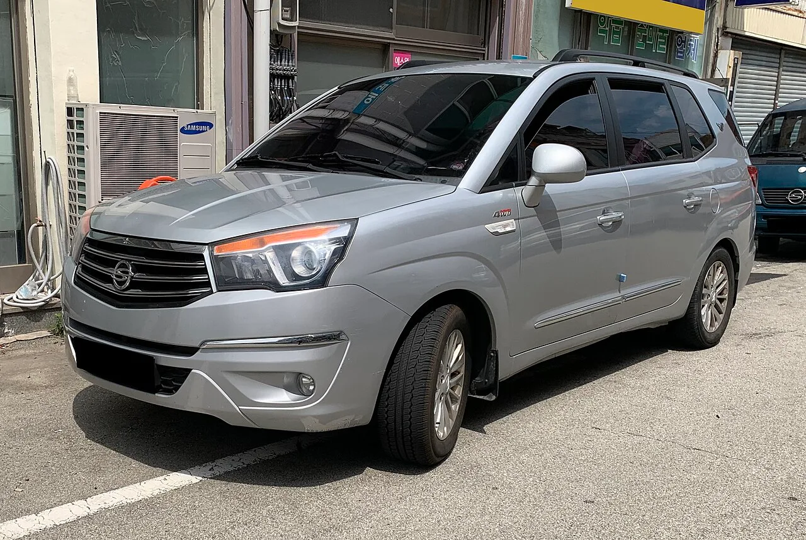

▲ 기아 더 뉴 카니발. 중고 시장에 2,000대 이상이 나와 있다
아이를 태우고 짐을 싣는 차를 1,000만 원 안에서 찾는다면 선택지가 넓지 않습니다.
현실적으로 남는 것은 기아 더 뉴 카니발과 쌍용 코란도 투리스모 둘입니다. 그런데 이 둘은 같은 카테고리로 묶기 어려울 만큼 성격이 다릅니다.
한쪽은 양문 슬라이딩 도어와 승차감, 다른 한쪽은 프레임 바디와 파트타임 사륜구동을 내놓습니다. 무엇을 포기할지가 그대로 답이 됩니다.
1. 예산이 1,000만 원일 때 실제로 남는 것
중고 패밀리카를 찾을 때 1,000만 원은 애매한 선입니다. 이 금액 바로 위와 바로 아래에서 살 수 있는 차의 성격이 확 달라지기 때문입니다.
코란도 투리스모는 600만~1,000만 원대에 형성돼 있습니다. 예산 안에서 온전히 소화됩니다.
카니발은 1,000만 원 초반부터 2,500만 원까지 폭이 넓습니다. 연식과 주행거리에 따라 갈리는데, 1,000만 원 초반대는 사실상 예산을 살짝 넘기는 구간입니다.
즉 예산을 엄격하게 1,000만 원으로 묶으면 코란도 투리스모 쪽이 여유가 생기고, 카니발은 빠듯합니다.
2. 제원 비교 — 숫자로는 카니발
| 항목 | 기아 카니발 | 코란도 투리스모 4WD |
|---|---|---|
| 최고출력 | 202마력 | 178마력 |
| 최대토크 | 45.0kg·m | 40.8kgf·m |
| 변속기 | 8단 자동 | 7단 자동 |
| 복합연비 | 트림별 상이 | 10.1km/ℓ |
| 구동방식 | 전륜 | 파트타임 4WD |
| 차체 구조 | 모노코크 | 프레임 바디 |
| 슬라이딩 도어 | 양쪽 적용 | 없음 |
| 승차 정원 | 7 / 9 / 11인승 | 9인승 |
동력 성능은 카니발이 앞섭니다. 출력 24마력, 토크도 위입니다. 여기에 8단 자동이 7단보다 변속 효율에서 유리합니다.
다만 구동방식과 차체 구조는 완전히 다른 이야기입니다. 코란도 투리스모는 파트타임 4WD와 프레임 바디를 갖췄습니다. 카니발에는 없는 조합입니다.

▲ 코란도 투리스모 4WD. 측면 4WD 배지가 이 차의 존재 이유를 말해준다
3. 슬라이딩 도어가 실제로 만드는 차이
카니발의 양쪽 슬라이딩 도어는 스펙표에서는 한 줄이지만, 아이를 태우는 상황에서는 체감 차이가 큽니다.
좁은 주차장에서 문을 활짝 열 수 없을 때가 대표적입니다. 여닫이 문은 옆 차와의 간격이 곧 개방 각도인데, 슬라이딩 도어는 그 제약을 받지 않습니다. 카시트에 아이를 앉히려면 상체를 차 안으로 넣어야 하는데, 이때 필요한 공간이 확보되느냐가 갈립니다.
아이가 스스로 문을 열 때도 다릅니다. 여닫이 문은 옆 차를 찍을 위험이 있지만 슬라이딩은 그럴 일이 없습니다.
코란도 투리스모는 일반 여닫이 도어입니다. 이 부분에서는 대안이 없습니다.
4. 사륜구동이 필요한 경우
반대로 코란도 투리스모의 파트타임 4WD와 프레임 바디가 결정적인 상황도 있습니다.
겨울철 경사로, 비포장 진입로, 캠핑장 접근로 같은 조건입니다. 전륜구동 미니밴으로는 부담스러운 노면에서 여유가 생깁니다.
프레임 바디는 비틀림에 강하고 험로 내구성에서 유리합니다. 대신 모노코크 대비 승차감과 정숙성은 불리합니다. 도심 위주로 탄다면 이 구조가 오히려 단점이 됩니다.
핵심은 이겁니다. 1,000만 원 이하에서 9인승과 사륜구동을 동시에 주는 차는 사실상 코란도 투리스모뿐입니다. 이 조건이 필요하면 대안이 없고, 필요 없으면 굳이 감수할 이유가 없습니다.
▲ 코란도 투리스모 후면. 프레임 바디 기반이라 험로 내구성에서 유리하다
5. 놓치기 쉬운 항목 — 매물 수
스펙 비교에서 잘 다루지 않지만 중고차에서는 중요한 변수가 있습니다. 매물이 얼마나 있느냐입니다.
카니발은 중고 시장에 2,000대 이상이 나와 있습니다. 선택지가 많다는 것은 상태 좋은 차를 고를 여지가 크고, 가격 협상력도 생긴다는 뜻입니다.
코란도 투리스모는 이보다 훨씬 적습니다. 조건에 맞는 매물을 찾기까지 시간이 걸리고, 선택지가 적으면 상태에서 타협하게 될 가능성이 높아집니다.
부품 수급과 정비 편의성에서도 물량이 많은 쪽이 유리합니다.
▲ 카니발은 세대·연식 선택지가 넓어 상태 좋은 매물을 고르기 쉽다
6. 정리 — 질문 하나로 갈린다
항목별로 보면 가격과 사륜구동은 코란도 투리스모, 동력성능·슬라이딩 도어·승차감·공간·매물은 카니발이 앞섭니다. 숫자만 세면 카니발이 유리합니다.
그런데 이 비교는 개수로 정할 문제가 아닙니다. 스스로에게 물어볼 질문은 하나입니다.
1,000만 원 이하에서 9인승과 사륜구동이 동시에 필요한가?
그렇다면 코란도 투리스모입니다. 이 조건을 만족하는 다른 차가 사실상 없기 때문입니다.
아니라면 카니발입니다. 도심 주행과 자녀 등하원, 편안한 가족 여행이 중심이라면 슬라이딩 도어와 승차감이 매일 체감되는 차이를 만듭니다.